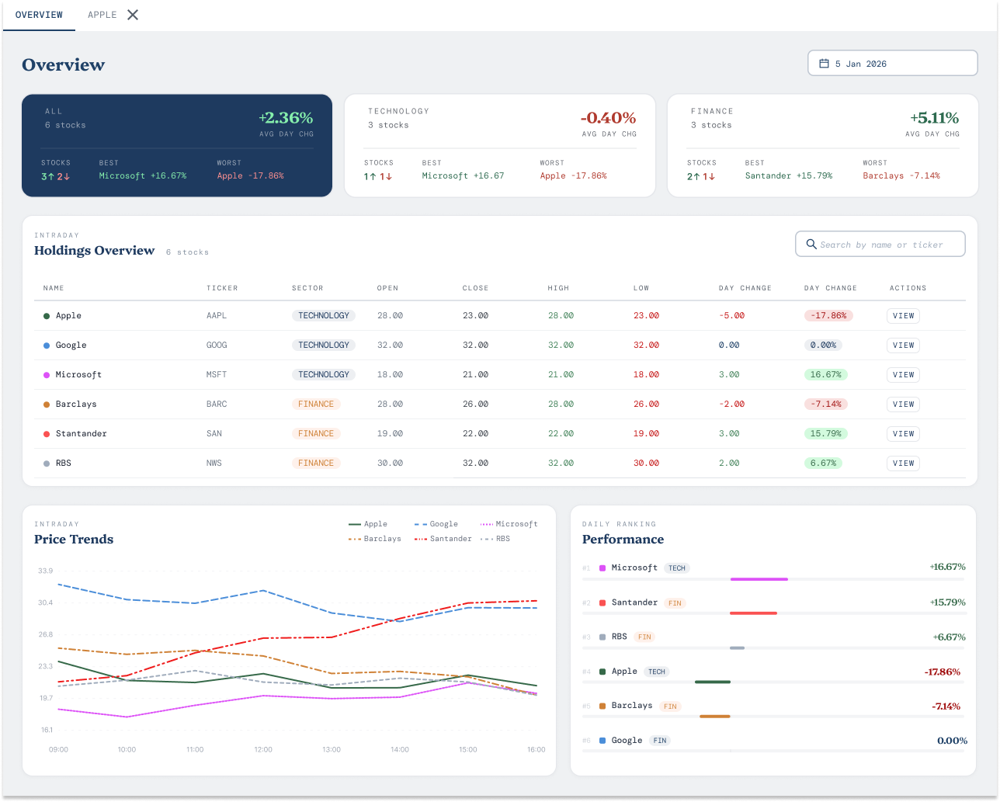
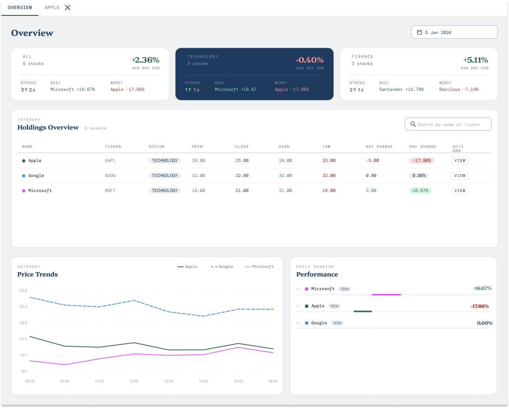

DataQuest
UX / UI · Financial Dashboard
- Visualise end-of-day stock prices across all companies
- Highlight the biggest % rises and falls and on which days
- Show price changes by sector with drill-down by company
- Used on desktop and iPad
- Figma file following best practices for dev handover
- Demonstrate Figma reuse and collaboration features
My role
Sole designer. Responsible for the full UX process — from data analysis and inspiration research through to a Figma component library and developer-ready specifications.
Tools: Figma
Implementation: Angular · D3
Devices: Desktop · iPad
Users: Financial Professionals
Context
The task was to design a dashboard for financial professionals performing end-of-week analysis on six stocks across two sectors — Technology (Apple, Google, Microsoft) and Finance (Barclays, Santander, RBS). The application needed to surface end-of-day prices, daily changes in absolute and percentage terms, and let users understand sector and company performance at a glance.
This was both a UX and a Figma task: the goal was not just a usable interface but a Figma file demonstrating component reuse, colour tokens, design variants, and specs that an Angular/D3 development team could act on directly.
The dataset
Three data views across five trading days (1–5 January), covering six companies in two sectors.
| Company | Sector | 01-Jan | 02-Jan | 03-Jan | 04-Jan | 05-Jan |
|---|---|---|---|---|---|---|
| Apple | Technology | 22 | 24 | 28 | 23 | 21 |
| Technology | 30 | 29 | 32 | 32 | 29 | |
| Microsoft | Technology | 14 | 15 | 18 | 21 | 21 |
| Barclays | Finance | 27 | 26 | 28 | 26 | 26 |
| Santander | Finance | 18 | 18 | 19 | 22 | 21 |
| RBS | Finance | 26 | 28 | 30 | 32 | 30 |
| Company | Sector | 02-Jan | 03-Jan | 04-Jan | 05-Jan |
|---|---|---|---|---|---|
| Apple | Technology | +9.09% | +16.67% | -17.86% | -8.70% |
| Technology | -3.33% | +10.34% | 0.00% | -9.38% | |
| Microsoft | Technology | +7.14% | +20.00% | +16.67% | 0.00% |
| Barclays | Finance | -3.70% | +7.69% | -7.14% | 0.00% |
| Santander | Finance | 0.00% | +5.56% | +15.79% | -4.55% |
| RBS | Finance | +7.69% | +7.14% | +6.67% | -6.25% |
Design thinking
Before opening Figma I worked through three questions: what does the data show, who is using it, and what do they need to do? Users are financial professionals doing end-of-week analysis — people who care about precision and who are comfortable with high information density.
User goals
View all EoD prices · Spot the biggest % movers and when they occurred · Drill from sector view into individual company performance
Context
Financial professionals performing end-of-week analysis. Used on desktop and iPad Air. Designed in Figma for Angular/D3 handover.
Data first, charts second
Most dashboards lead with charts. For financial professionals doing detailed analysis, the raw numbers matter more — similar to the Bloomberg Terminal approach. I put the data grid above the charts, with visualisations below to support pattern recognition.
Sector cards as the primary filter
Rather than asking users to apply a dropdown filter, three always-visible summary cards (ALL, TECHNOLOGY, FINANCE) show sector performance at a glance. Selecting a card filters the entire page — the data grid and charts both update to show only that sector.
The design
Overview tab with all six companies visible and ALL sector card selected.

Filtering by sector
Selecting the TECHNOLOGY card scopes the entire page — the grid narrows to Apple, Google and Microsoft, and both charts update to reflect only those three companies.

Key UX components
Tabs — drilling into companies
The Overview tab is always present and can never be closed — it acts as home. Clicking VIEW on any grid row opens a dedicated tab for that stock. Close icons appear on hover only to reduce visual noise. Multiple company tabs can be open simultaneously.
Date picker — controlling what data is shown
The date picker drives all page content. It supports Day, Week, Month, Quarter and Year views. In Week mode, selecting a start day auto-highlights the full 7 days. Non-trading days are disabled. A date range preview shows the selected period before confirming — especially useful for Quarter and Year selections.
Data grid — sortable, configurable columns
Column headers have a hover state with sort controls. A kebab menu on each header lets users pin columns, choose which columns are visible, re-order columns, and reset to the default layout — all without disrupting the active sector filter.
Figma and developer handover
The Figma file was structured for handover to an Angular/D3 development team. Components were built once and reused throughout — every card, tab, grid column, date picker, badge and search field exists as a Figma component with defined variants for all interaction states.
- Colour palette set up as Figma variables across named families
- Text styles defined globally and applied consistently throughout the file
- Spacing annotated with exact pixel values for both desktop and iPad breakpoints
- iPad Air layout generated using Figma's Scale feature from the desktop master
- Interaction notes and expected behaviours documented alongside the Figma file
What this project required of me
Understanding the data before designing
The data has three representations — prices, absolute changes, and percentage changes — each serving a different analytical purpose. Understanding which view mattered most for each user task shaped every layout decision, from what the sector cards show to what the grid columns prioritise.
Designing for professional users
Financial professionals have high information density tolerance and low patience for friction. The Bloomberg Terminal reference was not aesthetic inspiration — it was a reminder of what "designed for analysts" actually looks like in practice. Charts support, they don't replace.
Designing a component system, not a screen
Every component was designed to scale — for the current six companies but also for a future state with more companies, more sectors, or different date ranges. The sector card pattern, the tab model, and the grid column component all extend without redesign.
What I'd improve with more time
- Design the individual company tab with richer data — trading volume, P/E ratios, dividend info, beta and alpha
- Allow chart type customisation within each widget so analysts can choose what suits their task
- Add hover states on all chart data points
- Build a full component library in Figma from scratch with consistent naming conventions
- Produce dedicated iPad specifications rather than relying entirely on the Scale feature
- Cover additional iPad models with extra breakpoints
- Include app-wide navigation: user profile, settings, notifications
AI was used for initial inspiration only — not for generating the design. The Figma best practices requirement means the handover file itself is the deliverable. AI-generated code and Figma components would need building separately, making AI generation inefficient for this type of task.